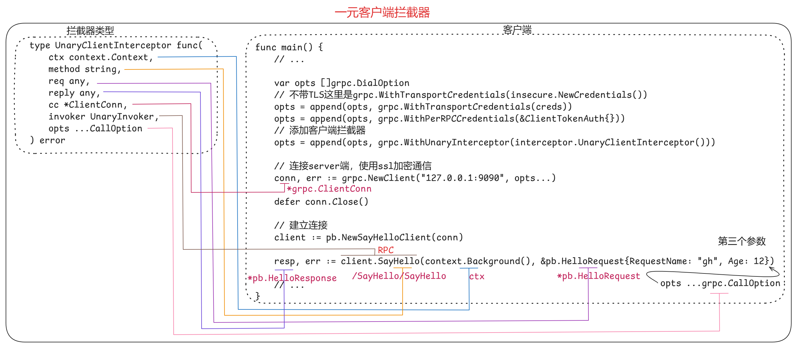
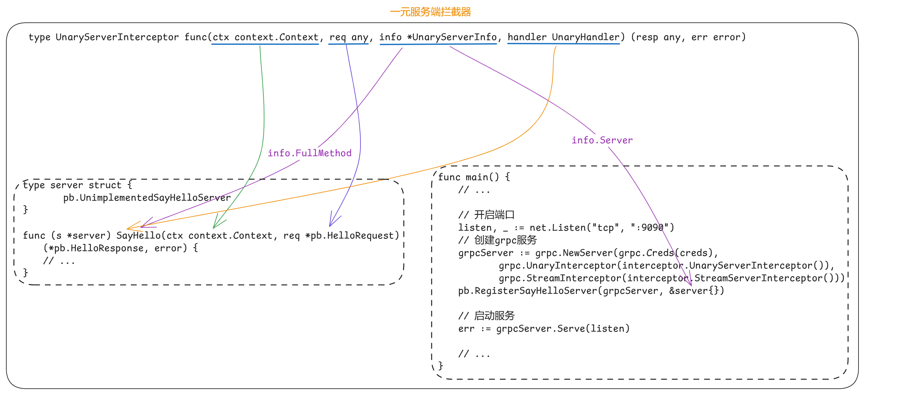

拦截器
- gRPC的拦截器和其他框架的拦截器（也称middleware）作用是一样的。利用拦截器我们可以在不侵入业务逻辑的前提下修改或者记录服务端或客户端的请求与响应，利用拦截器我们可以实现诸如日志记录、权限认证、限流等诸多功能
- gRPC 拦截器分为服务端拦截器和客户端拦截器。
- 服务端拦截器：是gRPC服务器在到达实际RPC方法之前调用的函数。它可以用于多种用途，例如日志记录、跟踪、速率限制、身份验证和授权。
- 客户端拦截器：是gRPC客户端在调用实际RPC之前调用的函数。
- 拦截器分为以下几种：
- UnaryClientInterceptor：在客户端拦截所有一元 gRPC 调用。
- UnaryServerInterceptor：在服务端拦截所有一元 gRPC 调用。
- StreamClientInterceptor：在客户端拦截所有流 gRPC 调用。
- StreamServerInterceptor：在服务端拦截所有流 gRPC 调用。
一元拦截器
客户端
- 作用：使用客户端元数据丰富消息的地方，例如有关客户端运行的硬件或操作系统的一些信息，或者可能启动跟踪流程。
- 客户端拦截器类型：
ctx context.Context：单个请求的上下文，一般和goroutine配合使用，起到超时控制的效果。method string：当前调用的 RPC 方法名称。格式：/服务名/方法名。req any：本次请求的参数，只有在处理前阶段修改才有效。该参数是接口，存储的请求参数的地址，比如*server.HelloRequest。reply any：本次请求响应，需要在处理后阶段才能获取到。该参数是接口，存储的响应参数的地址，比如*server.HelloReply。cc *ClientConn：客户端与服务端的链接。invoker UnaryInvoker：可以看作是当前RPC方法，一般在拦截器中调用invoker能达到调用RPC方法的效果，当然底层也是gRPC调用。opts ...CallOption：RPC调用的所有配置项，包含设置到conn上的，也包含配置在每一个调用上的。
|
|
- 作为客户端拦截器，可以在处理前检查 req 看看本次请求带没带 token 之类的鉴权数据，没有的话就可以在拦截器中终止或带上。
- 使用示例：
|
|
- 拦截器其实就是一个函数，可以分为预处理、调用RPC、后处理三个阶段。
- 客户端通过 grpc.WithUnaryInterceptor() 方法指定要添加的拦截器：
- 拦截器中的
ctx context.Context就是这里的client.SayHello(context.Background(), ...)这里的 ctx。 - 拦截器中的
method string就是这里的/SayHello/SayHello。 - 拦截器中的
req, reply any是*pb.HelloRequest、*pb.HelloResponse。 - 拦截器中的
cc *ClientConn就是这里的conn, err := grpc.NewClient(...)这里的 conn。 - 拦截器中的
invoker UnaryInvoker相当于client.SayHello()方法调用。 - 拦截器中的
opts ...CallOption相当于这里的client.SayHello()的第三个参数。
- 拦截器中的
|
|

服务端
- 作用：可以对请求的真实性进行一些检查，例如对其进行授权，或者检查某些字段是否存在/验证请求。
- 服务器拦截器类型：
ctx context.Context：单个请求的上下文。req any：RPC服务的请求结构体，接口也就是 *service.HelloRequest。info *UnaryServerInfo：RPC的服务信息。- info.FullMethod：请求方法名称，/服务名/方法名称
- info.Server：也就是当前调用方法的实现类，比如 *main.server。
handler UnaryHandler：它包装了服务实现，通过调用它我们可以完成RPC并获取到响应。所以在调用它之前我们可以进行改写req或ctx、记录逻辑开始时间等操作。调用完handler即完成了RPC并获取到响应，我们不仅可以记录响应还可以改写响应。
|
|
- 使用示例：
|
|
- 客户端通过 grpc.UnaryInterceptor() 方法指定要添加的拦截器：
|
|
github

流式拦截器
- 流拦截器过程和一元拦截器有所不同，同样分为三阶段：预处理、调用RPC方法、后处理。
- 预处理阶段和一元拦截器类似，参数调用RPC方法和后处理这两个阶段则完全不同。
- StreamAPI 的请求和响应都是通过 Stream 进行传递的，也就是通过 Streamer 调用 SendMsg 和 RecvMsg 这两个方法获取的。
- 然后 Streamer 又调用 RPC 方法来获取的，所以再流拦截器中我们可以对 Streamer 进行包装，然后实现 SendMsg 和 RecvMsg 这两个方法。
客户端
- 作用：比如将10个对象列表传输到服务器，例如文件或视频的块，我们可以再发送每个块之前拦截，并验证校验和等内容是否有效，将元数据添加到帧等。
- 客户端拦截器类型：
- ctx context.Context：单个请求的上下文，一般和goroutine配合使用，起到超时控制的效果。
- desc *StreamDesc：流描述信息。
- cc *ClientConn：客户端信息。
- method string：当前调用的 RPC 方法名称。格式：/服务名/方法名。
- streamer Streamer：完成RPC请求的调用。
- opts …CallOption：RPC调用的所有配置项，包含设置到conn上的，也包含配置在每一个调用上的。
|
|
- 使用示例：
func StreamClientInterceptor() grpc.StreamClientInterceptor {
return func(ctx context.Context, desc *grpc.StreamDesc, cc *grpc.ClientConn, method string, streamer grpc.Streamer, opts ...grpc.CallOption) (grpc.ClientStream, error) {
// 1) 预处理
// 1234-desc: &{Channel 0x846e20 true true}
fmt.Printf("1234-desc: %v\n", desc)
// method: /SayHello/Channel
log.Printf("method: %v\n", method) // /SayHello/Channel
// 因为SendMsg和RecvMsg方法是ClientStream接口内方法，我们需要先调用streamer函数获取到ClientStream
// 再对它进行封装，实现自己的 SendMsg 和 RecvMsg 方法。
stream, err := streamer(ctx, desc, cc, method, opts...)
return newStreamClient(stream), err
}
}
type streamClient struct {
grpc.ClientStream
}
func newStreamClient(c grpc.ClientStream) grpc.ClientStream {
return &streamClient{c}
}
func (s *streamClient) SendMsg(m interface{}) error {
// 2) 发送前，我们可以再这里对发送的消息处理
fmt.Printf("SendMsg: %v\n m: %T\n", m, m) // SendMsg: value:"张三"\n m: *service.Request
return s.ClientStream.SendMsg(m)
}
func (s *streamClient) RecvMsg(m interface{}) error {
// 3) 在这里，我们可以对接收到的消息进行处理(发送前)
fmt.Printf("RecvMsg: %v\n m:%T\n", m, m) // RecvMsg: m:*service.Response
return s.ClientStream.RecvMsg(m)
// 发送后
}
- 客户端通过 grpc.WithStreamInterceptor() 方法指定要添加的拦截器：
|
|
服务端
- 作用：比如我们在接收上述文件快想验证在传输过程中没有丢失任何内容，并在存储之前再次验证校验和。
- 服务端拦截器类型：
- srv any：服务实现，也就是 *main.server。
- ss ServerStream：服务端视角的流。无论是哪一种流式RPC对于服务端来说发送（SendMsg）就代表着响应数据，接收（RecvMsg）就代表着请求数据，不同的流式RPC的区别就在于是多次发送数据（服务器端流式 RPC）还是多次接收数据（客户端流式 RPC）或者两者均有（双向流式 RPC）。因此仅使用这一个抽象就代表了所有的流式RPC场景
- 通过该参数能设置Header、Trailer，获取 ctx，SendMsg、RecvMsg。
- info *StreamServerInfo：RPC的服务信息
- FullMethod string：方法名称。
- IsClientStream bool：客户端是流模式吗？
- IsServerStream bool：服务端是流模式吗？
- handler StreamHandler：它包装了服务实现，通过调用它我们可以完成RPC。
|
|
- 使用示例：
|
|
- 服务端通过 grpc.StreamInterceptor() 方法指定要添加的拦截器：
|
|
github
拦截器链
- 服务器只能配置一个 unary interceptor和 stream interceptor，否则会报错，客户端也是，虽然不会报错，但是只有最后一个才起作用。
|
|
- 如果你想配置多个，可以使用拦截器链。
|
|
第三方
注意
- 默认的 gRPC 只能配置一个拦截器。如果想设置多个拦截器链可以自己实现，也可以使用第三方包。
- 比如，https://github.com/grpc-ecosystem/go-grpc-middleware。